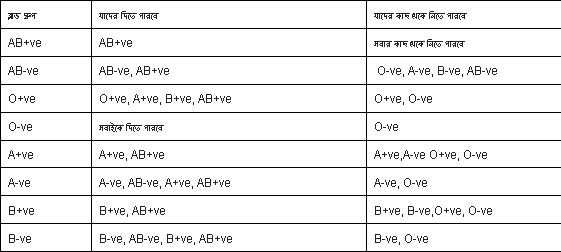

মানবদেহের একটি অপরিহার্য উপাদান হচ্ছে রক্ত। রক্তের বিকল্প শুধু রক্তই। চিকিৎসা বিজ্ঞানে আজ পর্যন্ত রক্তের কোন বিকল্প আবিস্কার হয়নি। রক্তের অভাবে যখন কোন মানুষ মৃত্যুর মুখোমুখি দাঁড়ায় তখন অন্য একজন মানুষের দান করা রক্তই তার জীবন বাঁচাতে পারে। কিন্তু ১৬ কোটি মানুষের এদেশে স্বেচ্ছা রক্তদাতার সংখ্যা খুবই কম।
চিকিৎসকদের মতে প্রাপ্তবয়স্ক সুস্থ নারী-পুরুষ চাইলেই নির্দিষ্ট সময় পরপর রক্ত দিতে পারেন। ১৮ থেকে ৪৫ বছর বয়সের মধ্যে শারীরিকভাবে সুস্থ নারী ও পুরুষ রক্ত দিতে সক্ষম। এক্ষেত্রে পুরুষের ওজন থাকতে হবে অন্তত ৪৮ কেজি এবং নারীর অন্তত ৪৫ কেজি। এছাড়া রক্তদানের সময় রক্তদাতার তাপমাত্রা ৯৯.৫ ফারেনহাইটের নিচে এবং নাড়ির গতি ৭০ থেকে ৯০ এর মধ্যে এবং রক্তচাপ স্বাভাবিক থাকতে হবে। পুরুষদের ক্ষেত্রে রক্তের হিমোগ্লোবিন প্রতি ডেসিলিটারে ১৫ গ্রাম এবং নারীদের ক্ষেত্রে ১৪ গ্রাম হওয়া দরকার। রক্তদাতাকে অবশ্যই ভাইরাসজনিত রোগ, শ্বাসযন্ত্রের রোগ এবং চর্মরোগ মুক্ত থাকতে হবে। সাধারণত ৯০ দিন পর পর, অর্থাৎ তিন মাস পর পর রক্ত দেওয়া যাবে। সাধারণত প্রাপ্তবয়স্ক সুস্থ মানুষের শরীরে ৪ থেকে ৬ লিটার পরিমাণ রক্ত থাকে। প্রতিবার ৪৫০ মিলিলিটার রক্ত দেয়া হয়। এ কারণে রক্ত দিলে ক্ষতি হওয়ার আশঙ্কা একেবারেই নেই।
রক্ত দেয়ার পর কিছুটা মাথা ঘোরাতে পারে। এটা স্বাভাবিক। তবে এ সময় হাঁটাহাঁটি না করে অন্তত এক থেকে দুই ঘণ্টা বিশ্রাম নেয়ার পরামর্শ দিয়েছেন চিকিৎসক। রক্তদাতা যদি ঘামতে থাকেন এবং অস্থিরতা হয়, তবে তাকে স্যালাইন খাওয়ানোর পরামর্শ দেন তিনি। রক্ত দেয়ার পর লোহিত রক্তকণিকার মাত্রা স্বাভাবিক অবস্থায় ফিরে যেতে অন্তত এক থেকে দেড় মাস সময় লাগে বলে উল্লেখ করেন ড. সিরাজুল ইসলাম। তিনি বলেন, রক্ত দেয়ার সময় শরীর থেকে রক্তের পাশাপাশি ২৫০-৩০০ মিলিগ্রাম আয়রন কমে যায় তাই তার ক্ষয়পূরণে আয়রন ও প্রোটিনযুক্ত খাবার বেশি বেশি খাওয়ার পরামর্শ দিয়েছেন তিনি।
রক্তের গ্রুপ মোট ৮ ধরণের: এবি পজিটিভ, এবি নেগেটিভ, এ পজিটিভ, এ নেগেটিভ, বি পজিটিভ, বি নেগেটিভ, এবং ও পজিটিভ, ও নেগেটিভ।
© Copy-Right : Sadakatul Ajam Md. Shakil